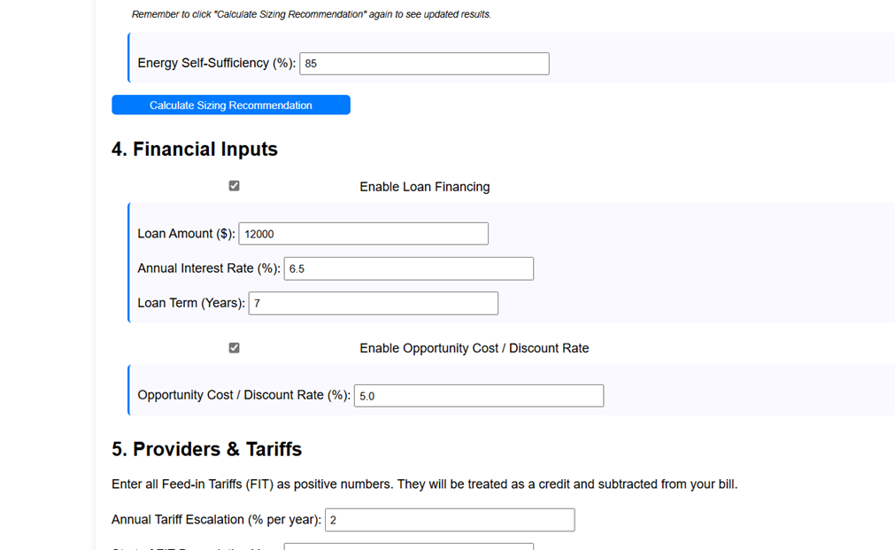
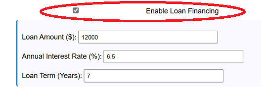
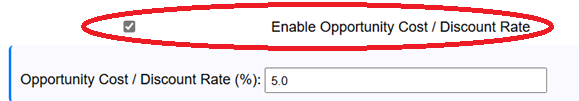

This optional section allows you to include the impact of financing (loans) and the time value of money (opportunity cost) in your ROI calculations for a more comprehensive financial picture.

Loan Financing
Enable Loan Financing
Check this box if you plan to finance some or all of the system cost with a loan.
How it affects calculations: When enabled, the calculated annual loan repayment amount will be subtracted from your annual savings each year for the duration of the loan term. This impacts:
Cumulative Net Cash Flow: Shows your actual cash position after loan payments.
Payback Period: Will likely be longer as savings are reduced by repayments.
Net Present Value (NPV): Will be lower.
Internal Rate of Return (IRR): Will be lower.

Loan Amount ($)
Enter the total amount you are borrowing for the system.
Annual Interest Rate (%)
Enter the annual interest rate for the loan (e.g., 6.5 for 6.5%).
Loan Term (Years)
Enter the total duration of the loan in years.
Opportunity Cost / Discount Rate
Enable Opportunity Cost / Discount Rate
Check this box to calculate the Net Present Value (NPV) and Internal Rate of Return (IRR) of your investment, considering the time value of money.

Opportunity Cost / Discount Rate (%)
Enter the annual rate of return (%) you could reasonably expect from investing the system cost elsewhere (e.g., in shares, bonds, or a high-interest savings account). This rate is used to "discount" future savings back to their present-day value.
How it affects calculations:
Net Present Value (NPV): This metric calculates the total profitability of the system *in today's dollars*. A positive NPV generally indicates a financially worthwhile investment compared to your alternative (the discount rate). Savings generated further in the future are valued less than savings generated today. A higher discount rate will result in a lower NPV.
Internal Rate of Return (IRR): This metric calculates the effective annualized rate of return generated by the system's savings over its lifetime. It represents the discount rate at which the NPV would be exactly zero. You can compare the IRR to your opportunity cost (discount rate) or loan interest rate to gauge the investment's attractiveness. An IRR higher than your discount rate or loan rate is generally favorable.